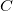

Logic and Proof
2 Propositional Logic
2.1 A Puzzle
The following puzzle, titled "Malice and Alice," is from George J. Summers' Logical Deduction Puzzles.
Alice, Alice's husband, their son, their daughter, and Alice's brother were involved in a murder. One of the five killed one of the other four. The following facts refer to the five people mentioned:
- A man and a woman were together in a bar at the time of the murder.
- The victim and the killer were together on a beach at the time of the murder.
- One of Alice's two children was alone at the time of the murder.
- Alice and her husband were not together at the time of the murder.
- The victim's twin was not the killer.
- The killer was younger than the victim.
Which one of the five was the victim?
Take some time to try to work out a solution. (You should assume that the victim's twin is one of the five people mentioned.) Summers' book offers the following hint: "First find the locations of two pairs of people at the time of the murder, and then determine who the killer and the victim were so that no condition is contradicted."
2.2 A Solution
If you have worked on the puzzle, you may have noticed a few things. First, it is helpful to draw a diagram, and to be systematic about searching for an answer. The number of characters, locations, and attributes is finite, so that there are only finitely many possible "states of affairs" that need to be considered. The numbers are also small enough so that systematic search through all the possibilities, though tedious, will eventually get you to the right answer. This is a special feature of logic puzzles like this; you would not expect to show, for example, that every even number greater than two can be written as a sum of primes by running through all the possibilities.
Another thing that you may have noticed is that the question seems to presuppose that there is a unique answer to the question, which is to say, of all the states of affairs that meet the list of conditions, there is only one person who can possibly be the killer. A priori, without that assumption, there is a difference between finding some person who could have been the victim, and show that that person had to be the victim. In other words, there is a difference between exhibiting some state of affairs that meets the criteria, and demonstrating conclusively that no other solution is possible.
The published solution in the book not only produces a state of affairs that meets the criterion, but at the same time proves that this is the only one that does so. It is quoted below, in full.
From [1], [2], and [3], the roles of the five people were as
follows: Man and Woman in the bar, Killer and Victim on the beach, and
Child alone.
Then, from [4], either Alice's husband was in the bar and Alice was
on the beach, or Alice was in the bar and Alice's husband was on the
beach.
If Alice's husband was in the bar, the woman he was with was his
daughter, the child who was alone was his son, and Alice and her
brother were on the beach. Then either Alice or her brother was the
victim; so the other was the killer. But, from [5], the victim had a
twin, and this twin was innocent. Since by Alice and her brother could
only be twins to each other, this situation is impossible. Therefore
Alice's husband was not in the bar.
So Alice was in the bar. If Alice was in the bar, she was with her brother or her son.
If Alice was with her brother, her husband was on the beach with one
of the two children. From [5], the victim could not be her husband,
because none of the others could be his twin; so the killer was her
husband and the victim was the child he was with. But this situation
is impossible, because it contradicts [6]. Therefore, Alice was not
with her brother in the bar.
So Alice was with her son in the bar. Then the child who was alone was her daughter. Therefore, Alice's husband was with Alice's brother on the beach. From previous reasoning, the victim could not be Alice's husband. But the victim could be Alice's brother because Alice could be his twin.
So Alice's brother was the victim and Alice's husband was the killer.
This argument relies on some "extra logical" elements, for example, that a father cannot be younger than his child, and that a parent and his or her child cannot be twins. But the argument also involves a number of common logical terms and associated patterns of inference. In the next section, we will focus on some of the rules governing the terms "and," "or," "not," and "if … then." Following the model described in the introduction, each such construction will be analyzed in three ways:
- with examples of the way it is used and employed in informal (mathematical) arguments
- with a formal, symbolic representation
- with an implementation in Lean
2.3 Rules of Inference
2.3.1 Implication
The first pattern of reasoning we will discuss, involving the "if … then …" construct, can be hard to discern. Its use is largely implicit in the solution above. The inference in the fourth paragraph, spelled out in greater detail, runs as follows:
If Alice was in the bar, Alice was with her brother or son.
Alice was in the bar.
Alice was with her brother or son.
This rule is sometimes known as modus ponens, or "implication elimination," since it tells us how to use an implication in an argument. In a system of natural deduction, it is expressed as follows:
Read this as saying that if you have a proof of  , possibly
from some hypotheses, and a proof of , possibly from hypotheses,
then combining these yields a proof of
, possibly
from some hypotheses, and a proof of , possibly from hypotheses,
then combining these yields a proof of  , from the hypotheses in
both subproofs.
, from the hypotheses in
both subproofs.
In Lean, the inference is expressed as follows:
The first command declares two variables, A and B, ranging over
propositions. The second line introduces two premises, namely, A → B
and A. The next line asserts, as an example, that B follows from
the premises. The proof is written simply H₁ H₂: think of this as
the premise H₁ "applied to" the premise H₂.
You can enter the arrow by writing \to or \imp or \r. You can
enter H₁ by typing H\_1. You can use any reasonable alphanumeric
identifier for a hypothesis; the letter "H" is a conventional choice.
The identifier H1 is a different from H₁, but you can also use
that, if you prefer.
The rule for proving an "if … then" statement is more subtle. Consider the beginning of the third paragraph, which argues that if Alice's husband was in the bar, then Alice or her brother was the victim. Abstracting away some of the details, the argument has the following form:
Suppose Alice's husband was in the bar.
Then …
Then …
Then Alice or her brother was the victim.
Thus, if Alice's husband was in the bar, then Alice or her brother was the victim.
This is a form of hypothetical reasoning. On the supposition that
holds, we argue that holds as well. If we are successful, we
have shown that implies , without supposing . In other
words, the temporary assumption that holds is "canceled" by making
it explicit in the conclusion.
The hypothesis is given the label  ; when the introduction rule is
applied, the label indicates the relevant hypothesis. The line
over the hypothesis indicates that the assumption has been "canceled"
by the introduction rule.
; when the introduction rule is
applied, the label indicates the relevant hypothesis. The line
over the hypothesis indicates that the assumption has been "canceled"
by the introduction rule.
In Lean, this inference takes the following form:
To prove A → B, we assume A, with label H, and show B. Here,
the word sorry indicates that the proof is omitted. In this case,
this is necessary; since A and B are arbitrary propositions, there
is no way to prove B from A. In general, though, A and B will
be compound expressions, and you are free to use the hypothesis H :
A to prove B.
Using sorry, we can illustrate the implication elimination rule
alternatively as follows:
We will adopt this convention below, using sorry to stand for parts
of a proof that could be spelled out, when the variables involved are
replaced by more complex assertions.
2.3.2 Conjunction
As was the case for implication, other logical connectives are generally characterized by their introduction and elimination rules. An introduction rule shows how to establish a claim involving the connective, while an elimination rule shows how to use such a statement that contains the connective to derive others.
Let us consider, for example, the case of conjunction, that is, the word "and." Informally, we establish a conjunction by establishing each conjunct. For example, informally we might argue:
Alice's brother was the victim.
Alice's husband was the killer.
Therefore Alice's brother was the victim and Alice's husband was the killer.
The inference seems almost too obvious to state explicitly, since the word "and" simply combines the two assertions into one. Informal proofs often downplay the distinction. In natural deduction, the rule reads as follows:
In Lean, the rule is denoted and.intro:
You can enter the wedge symbol by typing \and.
The two elimination rules allow us to extract the two components:
Alice's husband was in the bar and Alice was on the beach.
So Alice's husband was in the bar.
Or:
Alice's husband was in the bar and Alice was on the beach.
So Alice's was on the beach.
In natural deduction, these patterns are rendered as follows:
In Lean, the inferences are known as and.left and and.right:
2.3.3 Negation and Falsity
In logical terms, showing "not A" amounts to showing that A leads to a contradiction. For example:
Suppose Alice's husband was in the bar.
…
This situation is impossible.
Therefore Alice's husband was not in the bar.
This is another form of hypothetical reasoning, similar to that used in establishing an "if … then" statement: we temporarly assume A, show that leads to a contradiction, and conclude that "not A" holds.
In natural deduction, the rule reads as follows:
In Lean, it is illustrated by the following:
You can enter the negation symbol by typing \not.
The elimination rule is dual to these. It expresses that if we have both "A" and "not A," then we have a contradiction. This pattern is illustrated in the informal argument below, which is implicit in the fourth paragraph of the solution to "Malice and Alice."
The killer was Alice's husband and the victim was the child he was with.
So the killer was not younger than his victim.
But according to [6], the killer was younger than his victim.
This situation is impossible.
In symbolic logic, the rule of inference is expressed as follows:
And in Lean, it is implemented in the following way:
Notice that the negation elimination rule is expressed in a manner similar to implication elimination: the label asserting the negation comes first, and by "applying" the proof of the negation to the proof of the positive fact, we obtain a proof of falsity.
Notice also that in the symbolic framework, we have introduced a new
symbol,  . It corresponds to the identifier
. It corresponds to the identifier false in Lean, and
natural language phrases like "this is a contradiction" or "this is
impossible."
What are the rules governing ? In natural deduction, there is no
introduction rule; "false" is false, and there should be no way to
prove it, other than extract it from contradictory hypotheses. On the
other hand, natural deduction provides a rule that allows us to
conclude anything from a contradiction:
The elimination rule also has the fancy Latin name, ex falso sequitur quodlibet, which means ``anything you want follows from falsity.'' In Lean it is implemented as follows:
This elimination rule is harder to motivate from a natural language perspective, but, nonetheless, it is needed to capture common patterns of inference. One way to understand it is this. Consider the following statement:
For every natural number  , if is prime and greater than 2, then
is odd.
, if is prime and greater than 2, then
is odd.
We would like to say that this is a true statement. But if it is true,
then it is true of any particular number . Taking , we have
the statement:
If 2 is prime and greater than 2, then 2 is odd.
In this conditional statement, both the antecedent and succedent are false. The fact that we are committed to saying that this statement is true shows that we should be able to prove, one way or another, that the statement 2 is odd follows from the false statement that 2 is prime and greater than 2. The ex falso neatly encapsulates this sort of inference.
Notice that if we define  to be , then the rules
for negation introduction and elimination are nothing more than
implication introduction and elimination, respectively. We can think
of expressed colorfully by saying "if is true, then pigs
have wings," where "pigs have wings" is stands for .
to be , then the rules
for negation introduction and elimination are nothing more than
implication introduction and elimination, respectively. We can think
of expressed colorfully by saying "if is true, then pigs
have wings," where "pigs have wings" is stands for .
Having introduced a symbol for "false," it is only fair to introduce a symbol for "true." In contrast to "false," "true" has no elimination rule, only an introduction rule:
Put simply, "true" is true. In Lean, we can use true.intro for this
rule, or the abbreviation trivial.
2.3.4 Disjunction
The introduction rules for disjunction, otherwise known as "or," are
straightforward. For example, the claim that condition [3] is met in
the proposed solution can be justified as follows:
Alice's daughter was alone at the time of the murder.
Therefore, either Alice's daughter was alone at the time of the murder, or Alice's son was alone at the time of the murder.
In terms of natural deduction, the two introduction rules are as follows:
Here, the and stand for "left" and "right". In Lean, they are implemented as follows:
You can enter the vee symbol by typing \or. The identifiers inl
and inr stand for "insert left" and "insert right," respectively.
The disjunction elimination rule is trickier, but it represents a natural form of case-based hypothetical reasoning. The instances that occur in the solution to "Malice and Alice" are all special cases of this rule, so it will be helpful to make up a new example to illustrate the general phenomenon. Suppose, in the argument above, we had established that either Alice's brother or her son was in the bar, and we wanted to argue for the conclusion that her husband was on the beach. One option is to argue by cases: first, consider the case that her brother was in the bar, and argue for the conclusion on the basis of that assumption; then consider the case that her son was in the bar, and argue for the same conclusion, this time on the basis of the second assumption. Since the two cases are exhaustive, if we know that the conclusion holds in each case, we know that it holds outright. The pattern looks something like this:
Either Alice's brother was in the bar, or Alice's son was in the bar.
Suppose, in the first case, that her brother was in the bar. Then … Therefore, her husband was on the beach.
On the other hand, suppose her son was in the bar. In that case, … Therefore, in this case also, her husband was on the beach.
Either way, we have established that her husband was on the beach.
In natural deduction, this pattern is expressed as follows:
And here it is in Lean:
What makes this pattern confusing is that it requires two instances of
nested hypothetial reasoning: in the first block of parentheses, we
temporarily assume A, and in the second block, we temporarily assume
B. When the dust settles, we have established C outright.
2.3.5 If and only if
In mathematical arguments, it is common to say of two statements,
and , that " holds if and only if holds." This assertion is
sometimes abbreviated " iff ," and means simply that implies
and implies . It is not essential that we introduce a new
symbol into our logical language to model this connective, since the
statement can be expressed, as we just did, in terms of "implies" and
"and." But notice that the length of the expression doubles because
and are each repeated. The logical abbreviation is therefore
convenient, as well as natural.
The conditions of "Malice and Alice" imply that Alice is in the bar if and only if Alice's husband is on the beach. Such a statement is established by arguing for each implication in turn:
I claim that Alice is in the bar if and only if Alice's husband is on the beach.
To see this, first suppose that Alice is in the bar.
Then …
Hence Alice's husband is on the beach.
Conversely, suppose Alice's husband is on the beach.
Then …
Hence Alice is in the bar.
Notice that with this example, we have varied the form of presentation, stating the conclusion first, rather than at the end of the argument. This kind of "signposting" is common in informal arguments, in that is helps guide the reader's expectations and foreshadow where the argument is going. The fact that formal systems of deduction do not generally model such nuances marks a difference between formal and informal arguments, a topic we will return to below.
The introduction is modeled in natural deduction as follows:

And here is in Lean:
You enter the symbol ↔ by typing \iff or \lr (for the left-right
arrow). Notice that you can re-use the letter H for the hypothesis,
since the two branches of the proof are independent.
The elimination rules for iff are unexciting. In informal language, here is the "left" rule:
Alice is in the bar if and only if Alice's husband is on the beach.
Alice is in the bar.
Hence, Alice's husband is on the beach.
The "right" rule simply runs in the opposite direction.
Alice is in the bar if and only if Alice's husband is on the beach.
Alice's husband is on the beach.
Hence, Alice is in the bar.
Rendered in natural deduction, the rules are as follows:
Lean defines the rules iff.and_elim_left and iff.and_elim_right,
but also provides the abbreviations iff.mp (for "modus ponens") and
iff.mpr (for modus ponens reverse).
2.3.6 Proof by Contradiction
We saw an example of an informal argument that implictly uses the introduction rule for negation:
Suppose Alice's husband was in the bar.
…
This situation is impossible.
Therefore Alice's husband was not in the bar.
Consider the following argument:
Suppose Alice's husband was not on the beach.
…
This situation is impossible.
Therefore Alice's husband was on the beach.
At first glance, you might think this argument follows the same pattern as the one before. But a closer look should reveal a difference: in the first argument, a negation is introduced into the conclusion, whereas in the second, it is eliminated from the hypothesis. Using negation introduction to close the second argument would yield the conclusion "It is not the case that Alice's husband was not on the beach." The rule of inference that replaces the conclusion with the positive statement that Alice's husband was on the beach is called a proof by contradiction. (It also has a fancy name, reductio ad absurdum, "reduction to an absurdity.")
It may be hard to see the difference between the two rules, because we commonly take the statement "Alice's husband was not not on the beach" to be a roundabout and borderline ungrammatical way of saying that Alice's husband was on the beach. Indeed, the rule is equivalent to adding an axiom that says that for every statement A, "not not A" is equivalent to A.
There is a style of doing mathematics known as "constructive mathematics" that denies the equivalence of "not not A" and A. Constructive arguments tend to have much better computational interpretations; a proof that something is true should provide explicit evidence that the statement is true, rather than evidence that it can't possibly be false. We will discuss constructive reasoning in a later chapter. Nonetheless, proof by contradiction is used extensively in contemporary mathematics, and so, in the meanwhile, we will use proof by contradiction freely as one of our basic rules.
In natural deduction, proof by contradiction is expressed by the following pattern:
The assumption is canceled at the final inference.
In Lean, the inference is named by_contradiction, and since it is a
classical rule, we have to use the command open classical before it
is available. Once we do so, the pattern of inference is expressed as
follows:
2.4 Writing Proofs in Natural Deduction
As noted in Chapter Introduction, there are two common styles for writing natural deduction derivations. (The word "derivation" is often used to connote a formal proof instead of an informal one. When talking about natural deduction, we will use the words "derivation" and "proof" interchangeably.) In both cases, proofs are presented on paper as trees, with the conclusion at the theorem at the root, and hypotheses up at the leaves. In the first style of presentation, the set of hypotheses is written explicitly at every node of the tree. This is helpful because some rules (namely, implication introduction, negation introduction, or elimination, and proof by contradiction) change the set of hypotheses, by canceling a local or temporary assumption. Nonetheless, we will use a style of presentation that leaves this information implicit, so that each node of the tree is labelled with an explicit formula. Some people like to label each inference with the rule that is used, but that is usually clear from the context, so we will omit that as well. But when a rule cancels a hypothesis, we will make that clear in the following way: we will label all instances of the hypothesis at the leaves with a letter, like "x," and then we will use that letter to annotate the place where the rule is canceled.
When writing expressions in symbolic logic, we will adopt the an order of operations, which allow us to drop superfluous parentheses. When parsing an expression:
- negation binds most tightly
- then conjunctions and disjunctions, from right to left
- and finally implications and bi-implications.
So, for example, the expression is understood as
In addition to the rules listed in the last section, there is one additional rule that is central to the system, namely the assumption rule. It works like this: at any point, you can assume a hypothesis, . The way to read such a one-line proof is this: assuming , we have proved . Without this rule, there would be no way of getting a proof off the ground! After all, every rule listed in the last section has premises, which is to say, it can only be applied to derivations that have been constructed previously.
Let us consider a few examples. In each case, you should think about what the formulas say and which rule of inference is invoked at each step. Also pay close attention to which hypotheses are canceled at each stage. If you look at any node of the tree, what has been established at that point is that the claim follows from the uncanceled hypotheses. Here is a proof of :
There is a general heuristic for proving theorems in natural deduction:
- First, work backwards from the conclusion, using the introduction
rules. For example, if you are trying to prove a statement of the
form , add to your list of hypotheses and try to
derive . If you are trying to prove a statement of the form , use the and-introduction rule to reduce your task to
proving , and then proving .
- When you have run out things to do in the first step, use
elimination rules to work forwards. If you have hypotheses
 and , apply modus ponens to derive . If you have a
hypothesis
and , apply modus ponens to derive . If you have a
hypothesis  , use or elimination and try to prove any open
goals by splitting on cases, considering in one case and in
the other.
, use or elimination and try to prove any open
goals by splitting on cases, considering in one case and in
the other. - If all else fails, use a proof by contradiction.
The next proof shows that if a conclusion, , follows from and
, then it follows from their conjunction.
The conclusion of the next proof can be interpreted as saying that if
it is not the case that one of or is true, then they are both
false.
2.5 Writing Proofs in Lean
We will see that Lean has mechanisms for modeling proofs at a higher level than natural deduction derivations. At the same time, you can also carry out low-level inferences, and carry out proofs that mirror natural deduction proofs quite closely. Here is a Lean representation of the first example in the previous section:
The first line declares propositional variables A, B, and C. The
line that begins with the keyword example declares the theorem to be
proved, and the notation := indicates that the proof will
follow. The line breaks and indentation are only for the purposes of
readability; Lean would do just was well if the entire proof were
written as one run-on line.
Here are some additional notes:
- It is often important to name a theorem for future proof. Lean
allows us to do that, using one of the keywords
theorem,lemma,proposition,corollary, followed by the name of the proof. - You can omit a label in a
havestatement. You can then refer to that fact using the labelthis, until the next anonymoyushave. Alternatively, at any point later in the proof, you can refer to the fact by putting the assertion between backticks. - One can also omit the label in an
assumptionby using the keywordsupposeinstead. - Rather than declare variables beforehand, you can declare them in parentheses before the colon the marks the statemet of the theorem.
With these features, the previous proof can be written as follows:
In fact, such a presentation provides Lean with more information than
is really necessary to construct an axiomatic proof. The word assume
can be replaced by the symbol λ, assertions can be omitted from an
assume when they can be inferred from context, the justification of
a have statement can be inserted in places where the label was
otherwise used, and one can omit the show clauses, giving only the
justification. As a result, the previous proof can be written in an
extremely abbreviated form:
Such proofs tend to be hard to write, read, understand, maintain, and debug. In this text, we will favor structure and readability over brevity.
The next proof in the previous section can be rendered in Lean as follows:
And the last proof can be rendered as follows:
You can add comments to your proofs in two ways. First, any text after
a double-dash -- until the end of a line is ignored by the Lean
processor. Second, any text between /- and -/ denotes a block
comment, and is also ignored. You can nest block comments.
Notice that you can use sorry as a temporary placeholder while
writing proofs.
This enables you to check the proof to make sure it is correct modulo
the sorry, before you go on to replace the sorry with an actual
proof.
Here is another useful trick: try replacing the sorry by an
underscore character, _. This asks the Lean parser to guess what
should go there, based on the context. In this case, Lean does not
succeed, and gives you error message when you try to check the
proof. But the error message is informative: it tells you what you
need to prove, and what is available in the context for you to use.
2.6 Writing Informal Proofs
Remember that one goal of this course is to teach you to write ordinary (mathematical) proofs as well formal proofs in natural deduction and formally verified proofs in Lean. The fact that natural deduction and Lean's proof language are designed to model some aspects of informal proof does not mean that your informal proofs should look like natural deduction derivations or proofs in Lean! There are important differences between formal languages and informal language that you should keep in mind.
For one thing, ordinary proofs tend to favor words over symbols. Of
course, mathematics uses symbols all the time, but not in place of
words like "and" and "not"; you will rarely, if ever, see the symbols
 and in a mathematics textbook, unless it is a textbook
specifically about logic.
and in a mathematics textbook, unless it is a textbook
specifically about logic.
Similarly, the structure of an informal proof is conveyed with ordinary paragraphs and punctuation. Don't rely on pictorial diagrams, line breaks, and indentation to convey the structure of a proof. Rather, you should rely on literary devices like signposting and foreshadowing. It is often helpful to present an outline of a proof or the key ideas before delving into the details, and the introductory sentence of a paragraph can help guide a reader's expectations, just as it does in an expository essay.
Perhaps the biggest difference between informal proofs and formal proofs is the level of detail. Informal proofs will often skip over details that are taken to be "straightforward" or "obvious," devoting more effort to spelling out inferences that are novel of unexpected.
Writing a good proof is like writing a good essay. To convince your readers that the conclusion is correct, you have to get them to understand the argument, without overwhelming them with unnecessary details. It helps to have a specific audience in mind. Try speaking the argument aloud to friends, roommates, and family members; if their eyes glaze over, it is unreasonable to expect anonymous readers to do better.
Perhaps the best way to learn to write good proofs is to read good proofs, and pay attention to the style of writing. Pick an example of a textbook that you find especially clear and engaging, and think about what makes it so.
Natural deduction and formal verification can help you understand the components that make a proof correct, but you will have to develop an intuitive feel for what makes a proof easy and enjoyable to read.
2.7 Theorems and Derived Rules
In the examples above, we showed that, given and ,
we can derive in natural deduction. This is a common pattern of
inference, and, having justified it once, you might reasonably want to
use it freely as a new one-step inference. Similarly, having proved equivalent to , or  equivalent
to , one might feel justified in replacing one
by the other in any expression.
equivalent
to , one might feel justified in replacing one
by the other in any expression.
Indeed, this is how informal mathematics works: we start with basic patterns of inference, but over time we learn to recognize more complex patterns, and begin to apply them freely in our proofs. A single step in the informal argument in the solution to "Malice and Alice," or any mathematical proof, usually requires many more steps to spell out in a formal calculus. Moreover, in ordinary mathematics, one we prove a proposition or theorem, we can freely invoke it in another proof later on.
One can extend natural deduction with various mechanisms to abbreviate such "derived rules." We will not do so here, however. Natural deduction is designed to model the low-level mechanics of a proof and let us reason about deduction "from the outside"; we will not use it to write long proofs.
In formal verification, however, the goal is to build complex proofs, developing libraries for formalized mathematics along the way. To that end, Lean allows you to name the theorems you prove:
Here we follow the convention of describing the conclusion of the
theorem first (not_and_not), followed by the hypotheses (in this
case, not_or), separated by of. Thereafter, we can use the theorem
as a new rule of inference:
Notice that not_and_not_of_not_or takes, as arguments, the two
propositions C and D to which we want to instantiate the theorem,
followed by the hypothesis H.
We can tell Lean to make the first two arguments implicit, by changing
(A B : Prop) to {A B : Prop}. The curly braces ask Lean to infer
the values of these arguments from the context. With that change, we
can write the preceding proof as follows:
Here is a more interesting example: first we show, independently, that
each of ¬ A and ¬ B follows from ¬ (A ∨ B), and then we use
these facts to prove not_and_not_of_not_or.
Later, we will see that Lean has an expansive library of theorems. Eventually, Lean will also have automation that will fill in small steps automatically. In elementary exercises, however, we will expect you to carry out such proofs by hand.
To summarize our expectations in this course:
- When we ask you to prove something in natural deduction, our goal is to make you work with the precise, formal rules of the system, so you should not appeal to external rules unless we explicitly say you can.
- In interactive theorem proving, the main goal is to have the computer certify the proof as correct, and in that respect, automation and facts from the library are fair game. To learn to use the system, however, it is helpful to prove elementary theorems by hand. In this class, we will try to be explicit about what we would like you to use in the exercises we assign.
- When writing informal proofs, it is a judgment call as to what prior patterns of reasoning and background facts you may appeal to. In a classroom setting, the goal may be to demonstrate mastery of the subject to the instructors, in which case, context should dictate what is allowable (and it is always a good idea to err on the side of caution). In real life, your goal is to convince your target audience, and you will have to rely on convention and experience to judge what patterns of inference you can put forth, and how much detail you need to use.
2.8 Classical Reasoning
In informal mathematics, it is usually clearer to give a "direct" proof of a theorem, rather than using proof by contradiction. But proof by contradiction is sometimes necessary, and, at a foundational level, it can be used to derive other classical patterns of reasoning.
For example, we have seen that if you know , you can use
that knowledge to reason on cases, assuming first , and then
. In mathematical arguments, however, one often splits a proof into
two cases, assuming first and then . Using the elimination
rule for disjunction, this is equivalent to using , a
classical principle known as the law of the excluded middle. Here is a
proof of this, in natural deduction, using a proof by contradiction:
Here is the same proof rendered in Lean:
The principle is known as the law of the excluded middle because it
says that a proposition A is either true or false; there is no
middle ground. As a result, the theorem is named em in the Lean
library. For any proposition A, em A denotes a proof of A ∨ ¬ A,
and you are free to use it any time classical is open:
Or even more simply:
Here is another example. Intuitively, asserting "if A then B" is equivalent to saying that it cannot be the case that A is true and B is false. Classical reasoning is needed to get us from the second statement to the first.
Here is the same proof, rendered in Lean:
2.9 Some Logical Identities
For reference, the following is a list of commonly used propositional equivalences.
![\begin{enumerate}
\item Commutativity of $\wedge$: $A \wedge B \liff B \wedge A$
\item Commutativity of $\vee$: $A \vee B \liff B \vee A$
\item Associativity of $\wedge$: $(A \wedge B) \wedge C \liff
A \wedge (B \wedge C)$
\item Associativity of $\vee$: $(A \vee B) \vee C \liff
A \vee (B \vee C)$
\item Distributivity of $\wedge$ over $\vee$: $A \wedge (B \vee C) \liff
(A \wedge B) \vee (A \wedge C)$
\item Distributivity of $\vee$ over $\wedge$: $A \vee (B \wedge C) \liff
(A \vee B) \wedge (A \vee C)$
\item $(A \to (B \to C)) \liff (A \wedge B \to C)$.
\item $(A \to B) \to ((B \to C) \to (A \to C))$
\item $((A \vee B) \to C) \liff (A \to C) \wedge (B \to C)$
\item $\lnot (A \vee B) \liff \lnot A \wedge \lnot B$
\item $\lnot (A \wedge B) \liff \lnot A \vee \lnot B$
\item $\lnot (A \wedge \lnot A)$
\item $\lnot (A \to B) \liff A \wedge \lnot B$
\item $\lnot A \to (A \to B)$
\item $(\lnot A \vee B) \liff (A \to B)$
\item $A \vee \bot \liff A$
\item $A \wedge \bot \liff \bot$
\item $A \vee \lnot A$
\item $\lnot (A \liff \lnot A)$
\item $(A \to B) \liff (\lnot B \to \lnot A)$
\item $(A \to C \vee D) \to ((A \to C) \vee (A \to D))$
\item $(((A \to B) \to A) \to A)$
\end{enumerate}](ltxpng/02_Propositional_Logic.org.temp_6c7dbe053cd870a774e7dd5e619f78ebb660f43c.png)
All of them can be derived in natural deduction, and in Lean, using the rules and patterns of inference discussed in this Chapter.